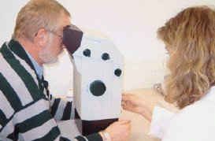

Arbeitsmedizinische Vorsorgeuntersuchungen
Der Arbeitgeber hat den Mitarbeitern arbeitsmedizinische Vorsorgeuntersuchungen
anzubieten. Dies gilt
- vor Aufnahme der Bildschirmtätigkeit,
- in regelmäßigen Zeitabständen während
der Arbeit am Bildschirm und
- beim Auftreten von Sehbeschwerden bei der Bildschirmarbeit.
|
 |
Diese Vorsorgeuntersuchungen richten sich nach dem berufsgenossenschaftlichen
Grundsatz "Bildschirmarbeitsplätze" (G 37). Die Untersuchungen werden vom
Betriebsarzt, z.B. Arbeitsmedizinischen-Sicherheitstechnischen Dienst der Berufsgenossenschaft der Bauwirtschaft (ASD der BG BAU) durchgeführt.
Die G 37-Untersuchung beinhaltet:
- Erhebung der Krankenvorgeschichte
- Befragung nach den Besonderheiten des Arbeitsplatzes
- Tätigkeitsbezogene körperliche Untersuchung
- Spezielle Untersuchungen des Sehvermögens bezüglich
- Sehschärfe
- Räumliches Sehen
- Stellung der Augachsen
- Zentrales Gesichtsfeld
- Farbensinn